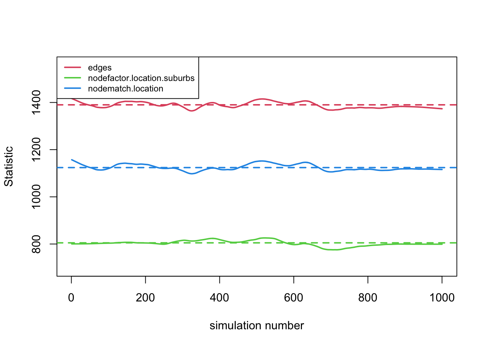
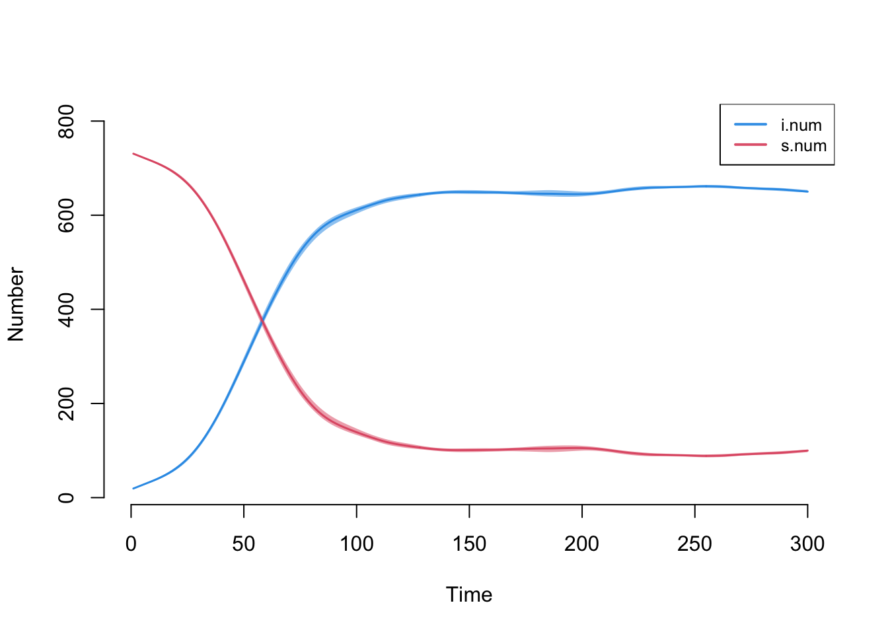
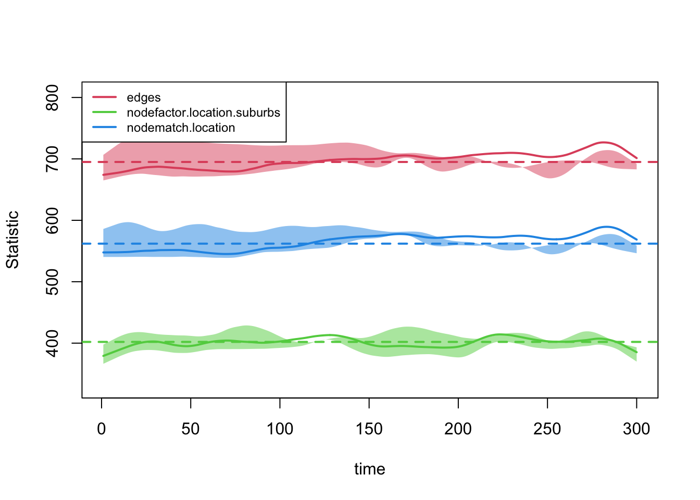
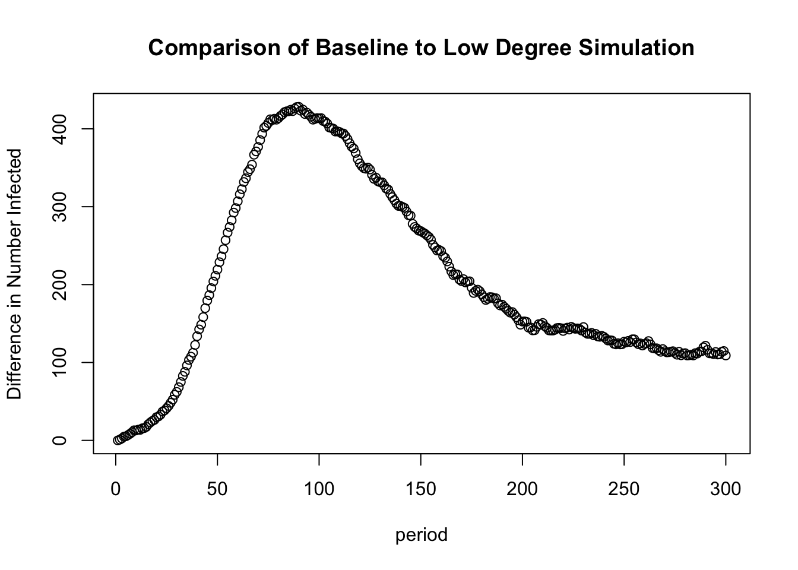
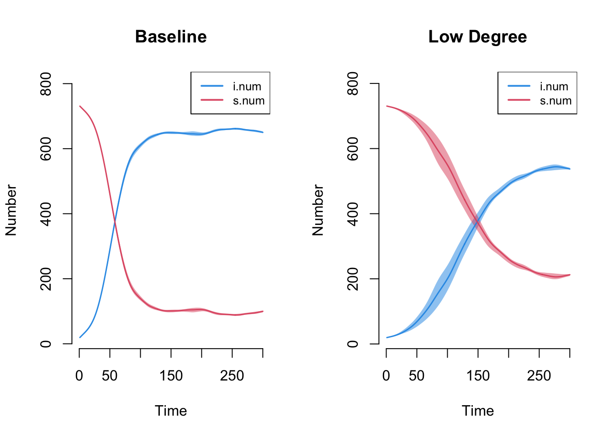
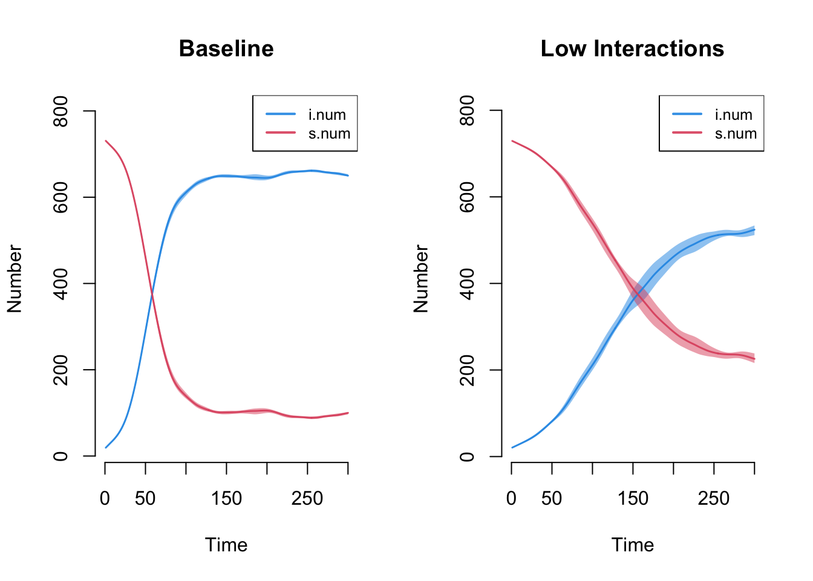

14, Part 1. Network Diffusion: Infectious Diseases
In this tutorial, we will cover dynamic epidemiological models of diffusion. We will focus on the substantive case of infection spread (like HIV or HCV) through a risk network (like drug use or a sex network). We are particularly interested in how the features of the network shape the potential for widespread contagion. For example, how much does the epidemic potential decrease if the number of current partners (e.g., number of sex partners during a given period) decreases dramatically, so that network density decreases? We are also interested in how risk behavior affects contagion potential.
We will utilize a dynamic network simulation in this tutorial. Simulation models are useful as they can be conditioned on empirical data, while also making it possible to explore complex, non-linear dynamics; i.e., how individual behavior and wider network features combine to shape infection potential. The model is dynamic as the network is allowed to evolve as the simulation progresses. Thus, both the network ties and the item of interest (the infection spreading over the network) are allowed to update over time. The focus is still on contagion, but actors are able to form and break ties as the simulation progresses; making it possible to explore how the process of tie formation, dissolution and maintenance affect the risk profile of a population, in terms of infection spread.
14.1 Reading in Data
We will utilize the EpiModel package (Jenness, Goodreau, and Morris 2018) for this tutorial, so lets go ahead and load that first.
library(EpiModel)With EpiModel, the basic idea is to specify two kinds of processes, one related to the formation and breaking of network ties, and one related to the spread of an infection through the network, dictating how an infection is spread from node i to node j. We will walk through both processes below, but first we read in the data for our example.
Epidemiological simulations are often informed by empirical data. Given the difficulty of collecting full network data on at-risk populations (or sensitive relations), researchers will often use sampled data to inform the simulation. With sampled network data, respondents are sampled from the population (using a random sample, RDS or convenience sample) and they answer questions about themselves and the people they are connected to on the relation of interest, such as drug or sex partners (see Chapter 6). This information is then used to inform the simulation, both in terms of the network model and the model of infection spread.
Here, we will use a faux ego network data set (constructed for this lab) to demonstrate how sampled network data can be used to inform diffusion models of infection spread. We can assume that this data is drawn from an at-risk population of drug users. The data includes the following information about the respondent, or ego: the number of alters named for each ego (with no cap) and information on where ego lives (city or suburbs). The data also includes information on up to 3 named drug partners; we have information on whether each named alter lives in the city or suburbs. We can assume that ego reports on the location for each alter. Let's first read in this example data set.
url1 <- "https://github.com/JeffreyAlanSmith/Integrated_Network_Science/raw/master/data/ego_network_example_data.txt"
ego_dat <- read.table(file = url1, header = T, stringsAsFactors = FALSE)head(ego_dat)## ids location degree location1 location2 location3
## 1 1 city 1 city <NA> <NA>
## 2 2 city 9 city suburbs city
## 3 3 city 2 city city <NA>
## 4 4 city 2 city city <NA>
## 5 5 city 5 city city city
## 6 6 city 5 city suburbs cityThe main variables are: ids = ego id; location = does ego live in city or suburbs?; degree = number of current drug partners for ego (say in the last 3 months); location1 = does first named alter live in city or suburbs?; location2 = does second named alter live in city or suburbs?; location3 = does third named alter live in city or suburbs?
We will use this data to walk through the process of specifying the network and epidemic models. We will begin by walking through the basic steps of setting up the simulation. We will then systematically vary the features of the simulation, to see how shifts in network formation and risk behaviors change the epidemic potential.
14.2 Specifying the Network Model
The first step in the process is to specify the features of the network that will be utilized in the simulation. In this case, we will use the ego network data read in above as a means of constructing the network. This ensures that our simulation is based on information from the population of interest. We will first define the size of the network to be used in the simulation. For simplicity, we will set the network size as the size of the sample. Note that it is also possible to employ a network that is larger than the size of the sample. For example, if we had known the true size of the population we could have set the number of nodes to that value.
Let's see how many people are in the sample:
num_nodes <- nrow(ego_dat) num_nodes## [1] 750Here we create an empty, undirected network of size 750 (defined in num_nodes). This will be in the network (not igraph) format.
epi_network <- network.initialize(n = num_nodes, directed = F)Now, we will take our constructed network and add some nodal attributes, based on the values seen in the observed data. To put the attributes onto the empty network we use a set.vertex.attribute() function. Here we will add location as a vertex attribute, setting the nodes in the network to have the same distribution of city/suburbs as seen in the ego network data.
epi_network <- set.vertex.attribute(epi_network, attrname = "location",
value = ego_dat$location)epi_network ## Network attributes:
## vertices = 750
## directed = FALSE
## hyper = FALSE
## loops = FALSE
## multiple = FALSE
## bipartite = FALSE
## total edges= 0
## missing edges= 0
## non-missing edges= 0
##
## Vertex attribute names:
## location vertex.names
##
## No edge attributesNow that we have the most basic features of the network defined, we need to specify a model that determines how ties form and break within the simulation. Here, we will base the network formation model on the information found in our ego network data. The ego network data in this case is restricted to number of alters, location of ego and location of named alter. Actual surveys may include much more detailed information; for example, about the duration of the relationship and the frequency of interaction.
We will now specify our tie formation formula, dictating how actors form ties over time within the simulation. The formula takes the same kinds of terms used in the ERGM and STERGM tutorials in Chapter 13 and is based on the available information from the ego network data. We will keep the model very simple and only include terms for edges (setting the baseline rate for number of partners), a nodefactor term for location (showing if people in the city have more/less ties than those in the suburbs), and a nodematch term for location (setting the strength of homophily for locatione.g., do people in the city disproportionately form ties with people in the city?). There are a number of other terms we could have added, including a concurrent term that captures how many nodes have more than 2 edges in a given time step (an important determinant of epidemic potential). Here we set the base formula.
formation_formula <- formula(~ edges + nodefactor("location") +
nodematch("location"))Now, we set the target statistics for each term in the formula. This will determine what kinds of networks are generated during the simulation (in a given period). The networks will be generated to be consistent with the target statistics on each term. The key is figuring out how to use the ego network data to set empirically-grounded target statistics.
First, we set the number of edges. This sets the baseline number of edges in the simulation, or the number of edges that exist (on average) per period. Here, we can use the mean degree in the ego network data, coupled with the size of the network, to set the desired number of edges. The total number of edges is just the mean degree * the number of nodes in the network. Lets calculate mean degree from the ego network data.
mean_degree <- mean(ego_dat$degree) mean_degree ## [1] 3.706667We can see that respondents have 3.707 edges on average. Now, we will take the mean degree, 3.707, multiply it by the number of nodes, 750, and divide it by 2 (as the network is undirected) to get the total number of edges.
edges <- mean_degree * num_nodes / 2 edges## [1] 1390Second, we set the nodefactor term on location. The nodefactor term is defined by the total number of ties emanating from one group. This is defined as: the mean degree of the group * the number of people in that group. Let's first calculate mean degree for those in the city and the suburbs. We will use a tapply() function to calculate mean degree by location.
mean_degree_location <- tapply(X = ego_dat$degree, INDEX = ego_dat$location,
FUN = mean) mean_degree_location ## city suburbs
## 3.95 3.22We see those in the city have higher degree than those in the suburbs. Now, let's calculate the number in the city and the suburbs. We do a simple table on location to see how many are in the city versus the suburbs.
tab_location <- table(ego_dat$location) tab_location##
## city suburbs
## 500 250We now need to calculate the total number of edges for each group by multiplying the mean degree for each group by the size of each group.
edges_by_group <- mean_degree_location * tab_locationedges_by_group ## city suburbs
## 1975 805In this case, city will serve as the reference category (by default the first category) in the formula and we thus only need the number of edges for those in the suburbs.
edges_suburbs <- edges_by_group[2] Finally, let's set the target statistic for the nodematch term, showing how strong homophily is for location. We need to calculate the number of edges we expect to match on location (so ij are both in the city or both in the suburbs). To get this from the ego network data, we first calculate the proportion of ego-alter pairs where ego and alter are in the same location (city/suburb). We will then take that proportion and multiply it by the total number of edges in the network. We begin by determining if the respondent has the same or different location as each alter.
location_cols <- c("location1", "location2", "location3")
same_location <- ego_dat[, "location"] == ego_dat[, location_cols] head(same_location)## location1 location2 location3
## [1,] TRUE NA NA
## [2,] TRUE FALSE TRUE
## [3,] TRUE TRUE NA
## [4,] TRUE TRUE NA
## [5,] TRUE TRUE TRUE
## [6,] TRUE FALSE TRUEThis says that respondent 1 has 1 alter and they are in the same location; respondent 2 has 3 alters, and is in the same location as 1 and 3 but a different location as alter 2; and so on. Now, let's see what proportion of ego-alter pairs match on location. We will do a simple table on the data frame constructed above, with a prop.table() function applied to get the proportions:
prop_match <- prop.table(table(same_location))prop_match ## same_location
## FALSE TRUE
## 0.1916966 0.8083034So, about .808 of edges should match on location. Note that we still need to calculate the number of edges we expect to match on location (so far we just have the proportion). We will take the proportion matching (the second element in prop_match) and multiply it by the total number of edges in the desired network:
num_match <- round(prop_match[[2]] * edges)num_match ## [1] 1124We see that 1124 edges should match on location. Now we put together the target statistics into one input vector.
target_statistics_baseline <- c(edges = edges,
nodefactor.location = edges_suburbs,
nodematch.location = num_match) target_statistics_baseline## edges nodefactor.location.suburbs nodematch.location
## 1390 805 1124This means that edges, in a given period, will form in a way consistent with these input statistics. For example, we would expect 1390 edges (or about 3.707 ties per person) in a given period, of which around 1124 should be within the same location. Note that we can alter these basic values in subsequent simulations, to see how shifting network formation patterns affect diffusion.
We also need to specify a model that will dictate how edges are dropped over time. This is set via a dissolution_coefs() function. The arguments are:
- dissolution = a formula that determines how edges are dropped. This can take a number of forms. The simplest version is that all edges are dropped at the same rate; a more complicated model could allow edges of certain characteristics to end at different rates (so we may think that if two people share the same characteristic, then the edge may last longer).
- duration = the average duration of an edge in the simulation; this is recorded in arbitrary time units (but we can think of this as months for concreteness)
- d.rate = the death rate of the population (so that nodes can leave the network across time, at least potentially).
Here, we create a fairly simple dissolution model. In this case, all edges dissolve at the same rate (set using offset(edges)), with average duration of 25 time units (not based on actual data, although it could be). The exit, or death rate, is set at .001.
dissolution_coefs <- dissolution_coefs(dissolution = ~ offset(edges),
duration = 25, d.rate = .001)dissolution_coefs ## Dissolution Coefficients
## =======================
## Dissolution Model: ~offset(edges)
## Target Statistics: 25
## Crude Coefficient: 3.178054
## Mortality/Exit Rate: 0.001
## Adjusted Coefficient: 3.22932114.3 Estimating the Network Model
We now estimate the statistical network model that will be used in our epidemiological simulation. The function is netest(), which is a wrapper for the ergm() and tergm() functions explored in Chapter 13. The main arguments are:
- nw = network object used as basis for simulation
- formation = formula specifying formation of edges
- target.stats = input target statistics corresponding to formation formula
- coefs.diss = coefficients for dissolution of edges
There are a number of other arguments which may be useful/necessary depending on the particular problem at hand. For example, it is possible to change the control parameters used in the estimation routine. Here, we set nw as the base network constructed above; formation is set to our formation formula; target.stats is set to our target statistics vector and coef.diss is set to our dissolution coefficients calculated above. We also use set.seed() to help in reproducing the model.
set.seed(1002)
net_mod <- netest(nw = epi_network, formation = formation_formula,
target.stats = target_statistics_baseline,
coef.diss = dissolution_coefs) summary(net_mod)## Call:
## ergm(formula = formation, constraints = constraints, offset.coef = coef.form,
## target.stats = target.stats, eval.loglik = FALSE, control = set.control.ergm,
## verbose = verbose, basis = nw)
##
## Monte Carlo Maximum Likelihood Results:
##
## Estimate Std. Error MCMC % z value Pr(>|z|)
## edges -6.27626 0.06889 0 -91.105 < 1e-04 ***
## nodefactor.location.suburbs 0.11724 0.03450 0 3.398 0.000678 ***
## nodematch.location 1.30176 0.06907 0 18.847 < 1e-04 ***
## ---
## Signif. codes: 0 '***' 0.001 '**' 0.01 '*' 0.05 '.' 0.1 ' ' 1
##
##
## Dissolution Coefficients
## =======================
## Dissolution Model: ~offset(edges)
## Target Statistics: 25
## Crude Coefficient: 3.178054
## Mortality/Exit Rate: 0.001
## Adjusted Coefficient: 3.229321Before we can use the model in a simulation, we need to make sure it is acting like we expect. We can use the netdx() function to see if the model is producing networks that match the target statistics, an indication that the model is working correctly. The netdx() function will simulate networks from the estimated model and compare the statistics from the simulated networks to the input target statistics. There are two basic versions of the comparison, one dynamic and one static. For the static comparison, the model simulates networks based on the underlying model for one time period, with no tie gain/loss over time. This is directly akin to looking at convergence in an ERG model. For the dynamic comparison, the model compares the target statistics in the simulated network to the input target statistics (per period), while adjusting for edge dissolution and creation. The main arguments to netdx() are:
- x = model estimated from netest
- nsims = number of simulated networks
- dynamic = should look at dynamic statistics (T/F)?
- nsteps = number of time periods in dynamic simulation
- nwstats.formula = formula of statistics to test against, default is the target statistics specified in the formation formula.
First, we will check the fit in the static case, to see if the base model reproduces the target statistics. Note that we do not include a nsteps argument as the simulated networks are only based on a single time period.
mod_fit1 <- netdx(x = net_mod, dynamic = F, nsims = 1000) plot(mod_fit1, legend = T) 
The fit looks good, with the simulated networks matching the target statistics in the cross-section. Now, let's look at the target statistics when we allow ties to dissolve and form over time. In this case, we will set dynamic equal to T and set the number of time periods, here equal to 300. Note that with 300 time periods for each simulation, we want to keep the number of simulations (nsims) fairly low (given the run time); here we set nsims to 5.
mod_fit2 <- netdx(x = net_mod, dynamic = T, nsims = 5, nsteps = 300) mod_fit2 ## EpiModel Network Diagnostics
## =======================
## Diagnostic Method: Dynamic
## Simulations: 5
## Time Steps per Sim: 300
##
## Formation Diagnostics
## -----------------------
## Target Sim Mean Pct Diff Sim SE Z Score SD(Sim Means) SD(Statistic)
## edges 1390 1390.714 0.051 7.269 0.098 31.195 44.990
## nodefactor.location.suburbs 805 800.799 -0.522 5.253 -0.800 14.595 38.098
## nodematch.location 1124 1127.045 0.271 8.195 0.372 30.132 45.903
##
## Duration Diagnostics
## -----------------------
## Target Sim Mean Pct Diff Sim SE Z Score SD(Sim Means) SD(Statistic)
## edges 25 25.028 0.11 0.089 0.309 0.282 0.611
##
## Dissolution Diagnostics
## -----------------------
## Target Sim Mean Pct Diff Sim SE Z Score SD(Sim Means) SD(Statistic)
## edges 0.04 0.04 0.008 0 0.023 0.001 0.005We can see that there are two different sets of target statistics, one capturing the target statistics at different time points in the simulation and the second looking at the duration and dissolution of edges. Let's first look at the target statistics.
plot(mod_fit2, legend = T) 
This generally looks okay. Now, let's look at duration and dissolution of ties. We will first set up the plot to have two columns. To plot the statistics dealing with the duration of ties we set type = "duration". To plot the statistics dealing with the dissolution of ties we set type = "dissolution"
par(mfrow = c(1, 2))
plot(mod_fit2, type = "duration")
plot(mod_fit2, type = "dissolution") 
The dotted line represents the expected duration of ties (set at 25 in this case). We can also look at the bottom part of the output from above to see if the duration and dissolution target values match the simulation.
mod_fit2## EpiModel Network Diagnostics
## =======================
## Diagnostic Method: Dynamic
## Simulations: 5
## Time Steps per Sim: 300
##
## Formation Diagnostics
## -----------------------
## Target Sim Mean Pct Diff Sim SE Z Score SD(Sim Means) SD(Statistic)
## edges 1390 1390.714 0.051 7.269 0.098 31.195 44.990
## nodefactor.location.suburbs 805 800.799 -0.522 5.253 -0.800 14.595 38.098
## nodematch.location 1124 1127.045 0.271 8.195 0.372 30.132 45.903
##
## Duration Diagnostics
## -----------------------
## Target Sim Mean Pct Diff Sim SE Z Score SD(Sim Means) SD(Statistic)
## edges 25 25.028 0.11 0.089 0.309 0.282 0.611
##
## Dissolution Diagnostics
## -----------------------
## Target Sim Mean Pct Diff Sim SE Z Score SD(Sim Means) SD(Statistic)
## edges 0.04 0.04 0.008 0 0.023 0.001 0.005We can see, for example, that the target percent of edges that dissolve is .04, matching what we see in the simulation (looking at the Sim Mean column).
14.4 Specifying the Epidemic Model
The second main step is to specify the epidemic part of the simulation, determining the manner in which the infection spreads through social connections. EpiModel allows for a flexible range of models to be specified, although it is also possible to write additional code to extend the functionality of the package. Here, we will consider a simple contagion model, where actors, once infected, can pass it on to those they interact with (e.g., share needles with) in a given time period. In the language of epidemiological studies, we will consider a SIS model (susceptible-infected-susceptible) where actors are either infected or susceptible to be infected. We will assume that actors can be reinfected, once recovered. We could alternatively assume that actors cannot be reinfected, thus running an SIR model (susceptible-infected-recovered). To run an epidemiological simulation, in conjunction with our network model specified above, we need to create a number of inputs, shaping the features of the simulation.
As a first step, we need to create a vector that captures the initial state that each node is in at the start of the simulation. Each node must be set to a "s" "i" or "r" for susceptible, infected or recovered. Here, let's randomly select 3% of the population to be infected. We will use a sample() function, randomly sampling an s, i, or r state for each node, with probability .97, .03 and 0 (so no one is recovered). We set size to num_nodes so that each node in the simulation will have an initial state.
initial_status <- sample(c("s", "i", "r"), size = num_nodes,
replace = T, prob = c(.97, .03, 0)) table(initial_status)## initial_status
## i s
## 21 729We then need to feed this vector of initial states to the init.net() function, with status.vector set to the vector of initial states.
initial_status_inputs <- init.net(status.vector = initial_status)Now, we will go ahead and set the probabilities of infection and recovery using a param.net() function. The arguments are:
- inf.prob = the probability of infection in a given interaction (or act)
- act.rate = number of interactions (or acts) in a time period between i and j, assuming that i and j are connected in that period.
- rec.rate = the rate of recovery in a time period
Here we will we set the probability of infection to .025, so that in a given act between i and j (like sharing needles) the probability of infection is .025. We set the number of acts per period to 1. This means that a pair, ij, that have a relationship have 1 risk event per period. In each risk event, node i, if infected, can pass the infection to j. Finally, we set the recovery rate to .01, so that a node has a .01 probability of recovering in a given time period. These inputs could be informed by actual data or could represent theoretical inputs, as in this case (which could then be varied to see their effect on the epidemic potential).
input_to_episim <- param.net(inf.prob = 0.025, act.rate = 1, rec.rate = 0.01) input_to_episim## Fixed Parameters
## ---------------------------
## inf.prob = 0.025
## act.rate = 1
## rec.rate = 0.01Finally, we need to create an object that controls the simulation itself. Here we use the control.net() function. The main arguments are:
- type = SI, SIR, SIS
- nsteps = number of time periods for simulation
- nsims = number of simulations to perform
- ncores = number of processors to use in simulation (if multiple cores are to be used)
Here we will we set type to "SIS", have a simulation with 300 time periods, do the simulation 4 times and run it over 2 processors. We would want to do this with more simulations in an actual analysis.
control_episim <- control.net(type = "SIS", nsteps = 300,
nsims = 4, ncores = 2)control_episim## Network Model Control Settings
## ===============================
## type = SIS
## nsteps = 300
## start = 1
## nsims = 4
## ncores = 2
## resimulate.network = FALSE
## tergmLite = FALSE
## cumulative.edgelist = FALSE
## truncate.el.cuml = 0
## module.order =
## save.nwstats = TRUE
## nwstats.formula = formation
## save.transmat = TRUE
## verbose = TRUE
## verbose.int = 1
## skip.check = FALSE
## raw.output = FALSE
## tergmLite.track.duration = FALSE
## save.diss.stats = TRUE
## attr.rules = <list>
## save.network = TRUE
## Dynamic Modules: resim_nets.FUN summary_nets.FUN infection.FUN recovery.FUN departures.FUN arrivals.FUN nwupdate.FUN prevalence.FUN14.5 Running Simulations
14.5.1 Running Baseline Model
We can now run our epidemiological simulation using the netsim() function. The main arguments are:
- x = fitted network model, based on
netest()function - param = model parameters, based on
param.net()function - init = initial status inputs, based on
init.net()function - control = control object, based on
control.net()function
Lets go ahead and run the simulation using the objects constructed above.
episim_baseline <- netsim(x = net_mod, param = input_to_episim,
init = initial_status_inputs,
control = control_episim) To get an initial sense of the results, we can do a quick summary on the simulation object. We will first convert the object to a data frame. We will use out = "mean" to tell R to output the mean values over all simulations.
summary_data_baseline <- as.data.frame(episim_baseline, out = "mean") head(summary_data_baseline)## time sim.num s.num i.num num si.flow is.flow
## 1 1 750 729.00 21.00 750 NaN NaN
## 2 2 750 727.00 23.00 750 2.00 0.00
## 3 3 750 725.25 24.75 750 1.75 0.00
## 4 4 750 724.25 25.75 750 1.50 0.50
## 5 5 750 721.25 28.75 750 3.25 0.25
## 6 6 750 719.25 30.75 750 2.25 0.25Each row in the data frame corresponds to a different time period in the simulation. The s.num column shows how many people in that period are susceptible (but not infected) while i.num shows how many people are infected. i.num shows the total number infected, while si.flow shows how many move from susceptible to infected (and is.flow shows the opposite) in a given period. The values correspond to the mean number over all simulations. We can also print the rate of infected and susceptible at particular days using a summary command and an at argument. Here we look at period 1.
summary(episim_baseline, at = 1) ##
## EpiModel Summary
## =======================
## Model class: netsim
##
## Simulation Details
## -----------------------
## Model type: SIS
## No. simulations: 4
## No. time steps: 300
## No. NW groups: 1
##
## Model Statistics
## ------------------------------
## Time: 1
## ------------------------------
## mean sd pct
## Suscept. 729 0 0.972
## Infect. 21 0 0.028
## Total 750 0 1.000
## S -> I NaN NA NA
## I -> S NaN NA NA
## ------------------------------Or period 100:
summary(episim_baseline, at = 100)##
## EpiModel Summary
## =======================
## Model class: netsim
##
## Simulation Details
## -----------------------
## Model type: SIS
## No. simulations: 4
## No. time steps: 300
## No. NW groups: 1
##
## Model Statistics
## ------------------------------
## Time: 100
## ------------------------------
## mean sd pct
## Suscept. 127.50 10.083 0.17
## Infect. 622.50 10.083 0.83
## Total 750.00 0.000 1.00
## S -> I 8.50 2.082 NA
## I -> S 6.25 2.754 NA
## ------------------------------We can also plot the number of infected and susceptible over time, generating the diffusion curve for the simulation. The basic inputs are the netsim object and then the items to plot. Here we want to plot the number infected and susceptible, denoted by "i.num" and "s.num". We also add legend = T.
par(mfrow = c(1, 1))
plot(episim_baseline, y = c("i.num", "s.num"), legend = T) 
We can see that in this particular simulation the infection spreads relatively quickly through the network, with over 80% infected by the 100th time period.
14.5.2 Varying Network Features
One key advantage of a simulation is that we can systematically alter the input parameters (while holding other things constant), allowing us to see how shifting conditions could, theoretically, affect diffusion through the population. Here, we will keep the basic epidemiological simulation the same but tweak the network features to see how this changes the epidemic potential. In particular, we will ask how the spread of infection through the population is affected when the number of partners per person decreases substantially. We will assume that the number of edges in the network in a given time period is cut in half. Here individuals have, on average, degree of 1.854, rather than 3.707. To construct inputs for the simulation, we will take the target statistics used originally and simply multiple all of them by .5. This will directly cut the number of edges in half. It will also ensure that all of the other target statistics, like nodematch on location, are based on the new desired number of edges (here half the original).
target_statistics_lowdegree <- round(target_statistics_baseline * .5)target_statistics_lowdegree## edges nodefactor.location.suburbs nodematch.location
## 695 402 562Now we run the network model using the new target statistics. All other inputs are the same.
net_mod_lowdegree <- netest(nw = epi_network, formation = formation_formula,
target.stats = target_statistics_lowdegree,
coef.diss = dissolution_coefs)And let's check to make sure the model is working as expected.
mod_fit_lowdegree <- netdx(x = net_mod_lowdegree, dynamic = T,
nsims = 5, nsteps = 300)plot(mod_fit_lowdegree, legend = T) 
Looks okay, so we can go ahead and use the dynamic network model in the epidemiological simulation. The inputs are the same as before but now we use the network model based on the lower mean degree.
episim_lowdegree <- netsim(x = net_mod_lowdegree, param = input_to_episim,
init = initial_status_inputs,
control = control_episim)Let's get a summary data frame of the new, lower degree simulation:
summary_data_lowdegree <- as.data.frame(episim_lowdegree, out = "mean")And let's compare period 10, 25, 50, 100, 150 and 300 between the two simulations, just including the number infected (i.num in the summary data frames).
period <- c(10, 25, 50, 100, 150, 300)
i.num.baseline <- summary_data_baseline[, "i.num"]
i.num.lowdegree <- summary_data_lowdegree[, "i.num"]
compare_dat <- data.frame(period = period,
i.num.baseline = i.num.baseline[period],
i.num.lowdegree = i.num.lowdegree[period])compare_dat## period i.num.baseline i.num.lowdegree
## 1 10 39.00 29.75
## 2 25 100.50 46.00
## 3 50 336.25 94.75
## 4 100 622.50 257.75
## 5 150 649.75 419.50
## 6 300 657.50 545.25Each row reports the number infected for each simulation for that time period. The second column reports the baseline model, run above (using mean degree of 3.707), while the third column reports the low degree simulation results. We can see that the low degree simulation has a lower number of infected at each time period, but the differences are striking around periods 50 to 150. We can also plot the difference in number infected between the two simulations.
diff_infected <- i.num.baseline - i.num.lowdegree
plot(1:300, diff_infected, xlab = "period",
ylab = "Difference in Number Infected",
main = "Comparison of Baseline to Low Degree Simulation")
Now let's plot the diffusion curves for the baseline simulation and the low degree simulation on one plot.
par(mfrow = c(1, 2))
plot(episim_baseline, y = c("i.num", "s.num"),
legend = TRUE, main = "Baseline")
plot(episim_lowdegree, y = c("i.num", "s.num"),
legend = TRUE, main = "Low Degree")
Overall, the average number of partners in a time period clearly affects the diffusion potential. With fewer edges per period, the potential to become infected and pass it on is greatly diminished. The decrease in average number of partners affects both the final number of infected, as well as the pace of infection, creating large differentials in infection in the middle periods. This suggests that decreasing the number of partners per period can reduce epidemic potential, but even here (in the low degree case) we still see a high rate of cases infected by the end of the simulation (around 75%).
14.5.3 Varying Epidemic Model
Just as we were able to systematically vary the network model in the simulation, we can also vary the input parameters to the epidemic model. Here, we will keep the network the same as in the baseline model (so average degree is set to 3.707, based on the original ego network data). We will only alter the inputs to the epidemiological part of the simulation. We will focus on the activity rate parameter. This governs how many times two nodes with a connection interact in a given time period. Given a connection, node i and j may interact 0, 1, 2, 3... times in a given period, with increasing risk of infection as the number of interactions increases.
Here we will create a new set of input parameters using the param.net() function. We will again set the infection probability to .025 and the recovery rate to .01. This time, however, we will lower the number of interactions per period (assuming i and j are connected) to .40. This effectively means that ij pairs who are connected will have .60 probability of having no risk events in a period and .40 probability of having one risk event (compare this to the previous simulation where all connected ij pairs had one risk event). Nodes thus have a relatively high degree, but lower probabilities of infection with each partner. Formally, we set the act.rate input to .40 in the param.net() function.
input_to_episim_lowinteraction <- param.net(inf.prob = 0.025,
act.rate = .40, rec.rate = 0.01) We now rerun the epidemic simulation, using the lower interaction inputs. All other inputs are the same as in the baseline model.
episim_lowinteraction <- netsim(x = net_mod,
param = input_to_episim_lowinteraction,
init = initial_status_inputs,
control = control_episim)Now let's plot the diffusion curves for the baseline simulation and the low interaction simulation on one plot.
par(mfrow = c(1, 2))
plot(episim_baseline, y = c("i.num", "s.num"),
legend = T, main = "Baseline")
plot(episim_lowinteraction, y = c("i.num", "s.num"),
legend = T, main = "Low Interactions")
We can clearly see the effect of activity rate on epidemic size (looking at the "i.num" lines). When nodes have limited risk events in a given period (as the activity rate falls below 1), the potential for infection spread is greatly diminished. Even if nodes maintain a large set of partners, if they dont interact with them at high rates (or do not engage in risky behavior), there is diminished chance for diffusion over the network. We thus begin to see the importance of distinguishing between relationships that exist and specific interactions that take place in a given period.
Substantively, we have seen how average degree and number of interactions per period affect epidemic potential. By lowering both the number of partners and the number of interactions (within relationships), the pace of infection spread decreases. In each case, however, the number infected at the end of the simulation is still quite high. As a further analysis, we could uncover how low these two inputs (or other potential inputs) would have to be set to lower the final epidemic size. We could also use this simulation platform to ask different kinds of questions; for example we may be interested in seeing the rate of infection between urban and suburban actors. We may also want to know how the differences between urban/suburban change as the features of the simulation change, in terms of network features and epidemic behavior. Finally, note that the EpiModel package is quite flexible, making it possible to specify a wide range of network and disease spread processes. We have explored only a small part of the full range of possibilities. In the next tutorial, we will explore diffusion processes in the context of adopting a new innovation, shifting away from biological transmission to more social diffusion processes.